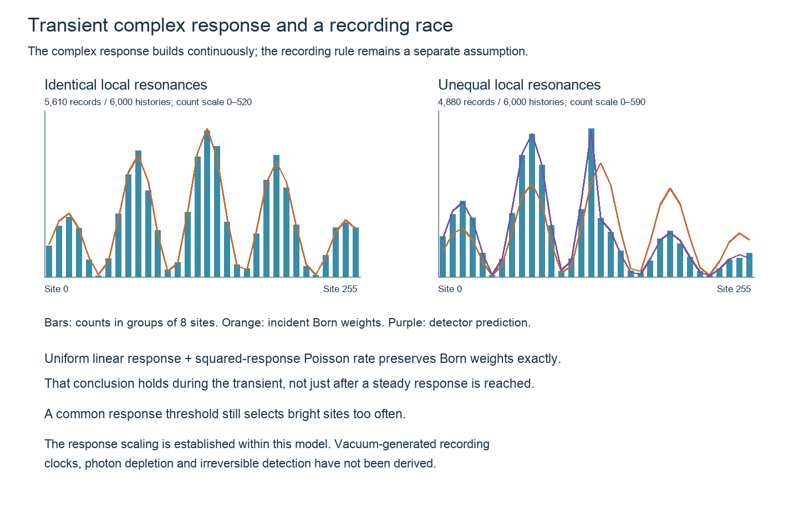

1 October 2026
The retrieved linear complex-response model preserves Born spatial weights exactly during its transient evolution when detector sites have identical responses and recording rates are proportional to squared response. This is distinct from the earlier sine-based phase-arrival race, which showed a finite bias. Fluctuation tests are compatible with Born counts at the tested sample size; unequal resonances produce predicted detector-response distortions.
Fourteen cases each used 6,000 independent incident histories: 84,000 total. Four paired numerical refinements reused 200 histories each. Both a Poisson recording race and a threshold comparator were evaluated on each history. No target site was drawn from the Born distribution beforehand.

The read-only source is section 12 of Superposition_Equations (5).md in the user's Downloads. That model deliberately replaces Adler sine coupling with a damped complex oscillator. Linear input-amplitude coupling produces squared-amplitude response strengths, and an explicitly separate Poisson race generates outcomes. The present test implements the local-site generalization and follows the build-up from zero response instead of assuming a steady state.
dzⱼ/dt = −(γⱼ + iΔⱼ)zⱼ + ψⱼ exp(iθⱼ)[1 + b ξⱼ(t)] zⱼ(0) = 0 Recording rate λⱼ(t) = 0.6 |zⱼ(t)|² Alternative readout: first |zⱼ(t)|² to cross 1/256
The shared photon profile ψ has normalized coherent amplitudes at 256 sites in the previous finite one-dimensional array. The incident drive is held constant during a dimensionless observation window 0≤t≤6. This is a linear-response representation of the incident excitation, not a normalized evolving photon–detector wavefunction. z is a response amplitude; |z|² is not automatically a probability or energy. Coupling/readout units and the finite drive duration are illustrative, with no fitted conversion to physical seconds.
Baseline damping is γ=1, detuning Δ=0, and θ=0. Slow and fast cases use γ=0.25 and 2 without changing the drive coefficient. A fixed-electronic-phase control assigns each site a random θ; this multiplies its whole response by a phase and cannot change its rate. It tests the distinction between arbitrary local phase and physically relevant interference between separate pathways.
The complex fluctuation is ξ(t)=u cos t+v sin t, with independent proper complex Gaussian spatial vectors u and v. Spatial covariance is independent-site, free-space Green-tensor, or ideal-mirror covariance, as in the earlier benchmark. Noise strengths b=0.25 and 1 are tested. Unlike the earlier normalized-coupling sweep, the mean drive strength is not rescaled to compensate for added fluctuations; both constructive/destructive interference and the increased mean squared response are retained.
Only spatial covariance is QED-inspired. The selected temporal spectrum and its modulation of a material transition remain assumptions, not a derived vacuum reservoir. Multiplication by ψ makes the drive vanish at exact optical zeros and when no photon drive is supplied. This suppresses vacuum-only excitation by construction; it does not model dark counts.
For no fluctuations and lⱼ=γⱼ+iΔⱼ, the solution is zⱼ(t)=ψⱼ exp(iθⱼ)[1−exp(−lⱼt)]/lⱼ. For each harmonic component of the colored drive, the exact transfer function is [exp(iΩt)−exp(−lⱼt)]/(lⱼ+iΩ). These are evaluated directly, avoiding integration error in the complex oscillator itself. The time grid is used only for integrated recording rates and threshold crossings.
When the response parameters are identical, zⱼ(t)=ψⱼF(t) up to rate-irrelevant fixed phases. Therefore λⱼ(t)=wⱼh(t), where wⱼ=|ψⱼ|² and h(t)=0.6|F(t)|². The probability density for the first record is
p(j,t) = wⱼ h(t) exp[−∫₀ᵗ h(s) ds]. P(j | a record by T) = wⱼ.
This factorization is exact for any finite observation window with nonzero capture probability. It does not require steady state or a specially chosen phase-locking tolerance. The squared dependence follows from the linear response plus the assumed squared-response recording law. The exponential survival and individual event are supplied by the Poisson assumption, not by complex geometry alone.
The same response and readout parameters are used for four input patterns: the original interference profile, a shifted relative optical phase, unequal beam amplitudes, and a single-beam envelope. We also vary damping, fixed electronic phases, absolute fluctuation strength and spatial field correlations. A detuning step sets Δ=0 on one half and 2 on the other; a separate fixed disordered detector uses Gaussian site detunings of standard deviation 0.8.
| Case | Poisson records | TV from incident Born weights | Adjusted p | Threshold records |
|---|---|---|---|---|
| uniform double | 5,610 | 0.0727 | 1.0000 | 6,000 |
| uniform shifted | 5,591 | 0.0764 | 1.0000 | 6,000 |
| uniform single | 5,586 | 0.0879 | 1.0000 | 6,000 |
| uniform unequal | 5,590 | 0.0739 | 1.0000 | 6,000 |
| slow response | 6,000 | 0.0795 | 0.8634 | 6,000 |
| fast response | 3,269 | 0.1004 | 1.0000 | 0 |
| fixed electronic phases | 5,593 | 0.0730 | 1.0000 | 6,000 |
| independent weak | 5,631 | 0.0742 | 1.0000 | 6,000 |
| independent strong | 5,929 | 0.0785 | 0.8291 | 6,000 |
| free correlated | 5,900 | 0.0728 | 1.0000 | 6,000 |
| mirror parallel | 5,674 | 0.0719 | 1.0000 | 6,000 |
| mirror normal | 5,981 | 0.0674 | 1.0000 | 6,000 |
| detuning step | 4,880 | 0.2541 | 0.0027 | 6,000 |
| detuning disorder | 5,308 | 0.1125 | 0.0065 | 6,000 |
All 12 clock cases without fixed site-response disorder are compatible with the incident Born reference after Holm correction of the 27 primary comparisons. For the uniform deterministic cases, agreement is also an exact analytic result. For fluctuating cases, this is a finite-sample compatibility statement, not proof of exact equality: correlated rate fluctuations and survival weighting can in principle alter the averaged distribution.
The two detuned cases disagree with the uncorrected incident reference. Their records agree with an independent calculation including the site-specific transient detector response: p≈0.643 for the step and p≈0.170 for fixed disorder. These distortions are expected detector response effects, not violations of quantum mechanics. A physically appropriate Born prediction for a nonuniform detector includes its measurement response.
Thirteen threshold cases produce 6,000 records each and all disagree strongly with the incident reference. The fast-response case never reaches its threshold and produces no threshold records. Thus linear complex response alone does not rescue the tested first-threshold rule. A record is still imposed at the first event; no microscopic circuit latch or cascade is derived here.
All 84,000 event histories were read back and matched against site counts and gate counts at times 1, 3 and 6. Integrated event probabilities plus no-event survival sum to one. Exact analytic capture fractions for uniform deterministic response agree with numerical hazard integration to below 4×10⁻⁸ in probability.
For four paired 200-history samples, time steps 0.05, 0.025 and 0.0125 use identical field coefficients and recording clocks. No clock winner changes in either halving. One threshold winner changes in the first halving of the strong independent-noise case, and none changes in the final halving. Maximum changes in mean local record weights decrease by approximately a factor of four, reaching below 5.6×10⁻⁸ in the final halving.
Two deterministic detuned predictions were independently integrated on 6,000- and 12,000-step grids. Their maximum local probability change is below 7.4×10⁻¹¹, and the main-grid predictions differ by below 1.9×10⁻⁷. Statistical comparisons use multinomial Monte Carlo reference distributions, accommodating sparse site counts.
The original complex-response idea is now tested in its own form, rather than replaced by an Adler phase-arrival law. Its amplitude-squared scaling and uniform-site spatial statistics are supported analytically, through time-dependent simulations and across changed incident profiles without retuning. Site response differences have a predictable effect.
The unresolved physical step is the origin of the recording process. Independent unit-exponential thresholds for integrated rates represent assumed Poisson clocks. Assigning those random numbers to vacuum fluctuations by name would not derive them. The linear response also omits photon depletion, a full single-excitation entangled state, material band structure and irreversible amplification. A detector-specific open-system derivation is needed to connect its damping, fluctuations and capture channel consistently.
The next test should therefore start from an explicit electronic transition and reservoir, derive the response and its event law together, and determine which stochastic assumptions are genuinely necessary. The earlier reversible single-excitation model supplies a useful comparison for excitation conservation; the present susceptibility model should not be mistaken for that complete quantum state.
All raw site counts · Parameters and results · Paired numerical refinements · Verification record. Event logs and reproducible scripts are saved alongside this report.